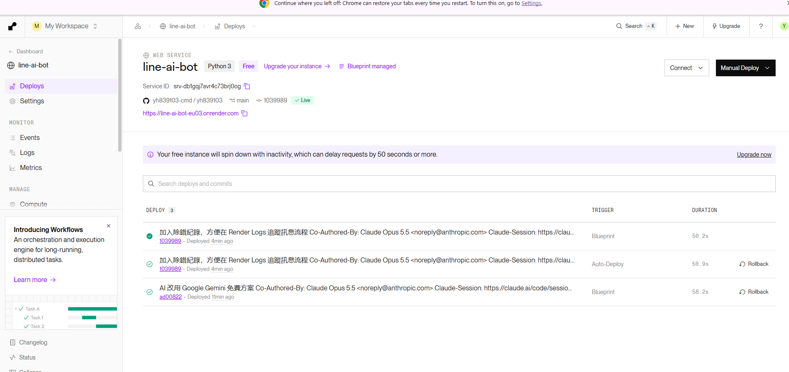
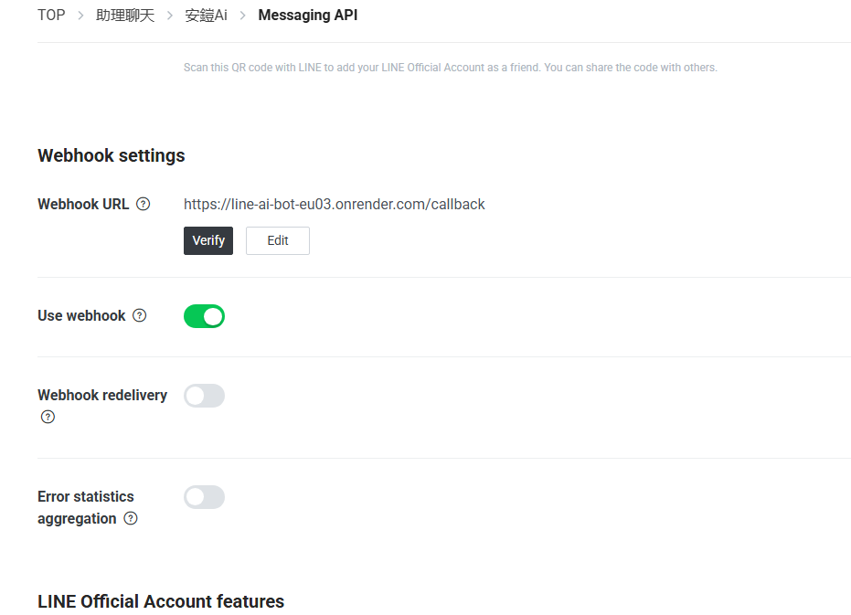
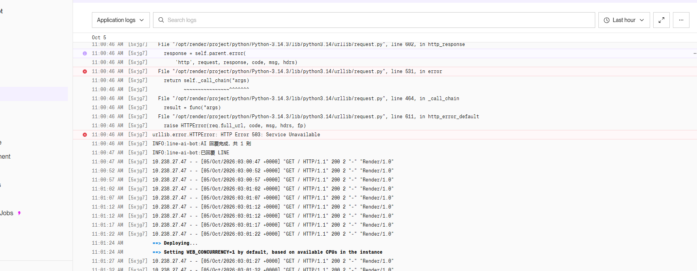
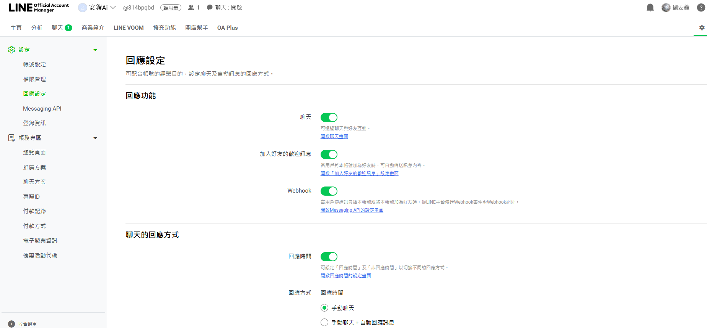
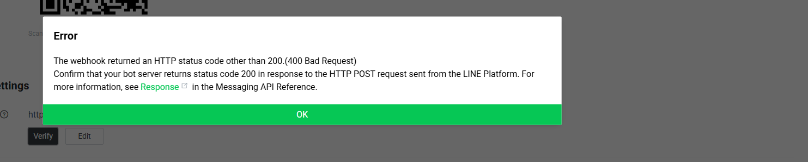
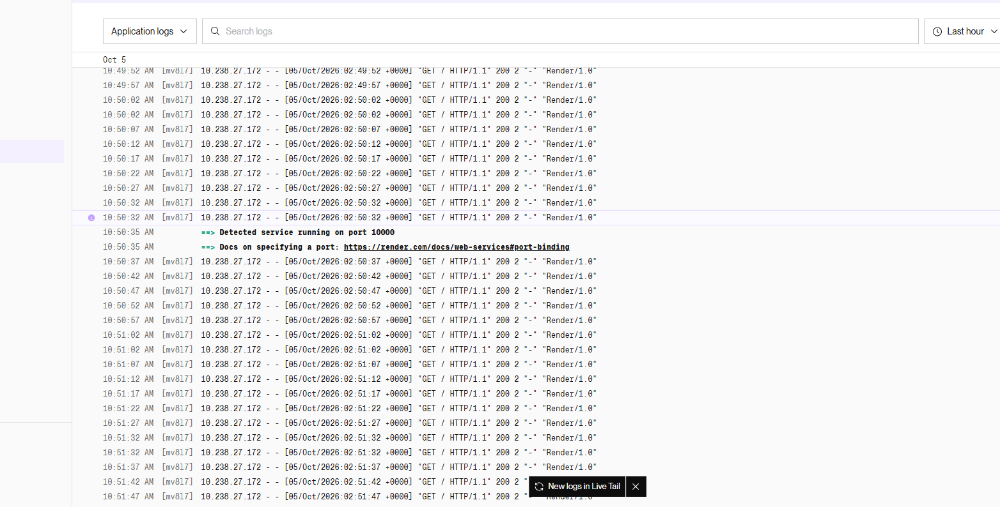

專案連結
| GitHub 專案（程式碼） | https://github.com/yh839103-cmd/yh839103 |
|---|---|
| 專題計畫 | docs/PROPOSAL.md（另附 PDF） |
| Bot 伺服器（健康檢查） | https://line-ai-bot-eu03.onrender.com/（打開顯示 OK 代表運作中） |
| LINE 官方帳號 ID | @314bpqbd |
專案簡介
一個放在 LINE 裡的 AI 聊天機器人。使用者用手機加好友後，直接傳訊息就能得到 AI 回答，不用另外下載 App。全部使用免費方案，費用 0 元。
- 💬 AI 對話（Google Gemini 免費 API），繁體中文、台灣用語
- 🧠 記得最近 10 輪對話，可以接著追問
- 🔎 會自己查資料：中文維基百科（知識）、Open-Meteo（天氣），並註明來源
- ⌨️ 指令：「說明」顯示用法、「重新開始」清除記憶
- 🔁 Google 忙線時自動重試，並換用其他免費模型
系統架構
手機 LINE ⇄ LINE 平台 ──Webhook──▶ Render 上的程式（Python + Flask）
├─▶ 對話記憶（最近 10 輪）
├─▶ Gemini AI ──需要時──▶ 維基百科／天氣
└─▶ Reply API 把答案傳回 LINE
| 服務 | 用途 | 費用 |
|---|---|---|
| LINE Developers / 官方帳號 | Bot 帳號、收發訊息 | 免費 |
| Google AI Studio（Gemini API） | AI 回答 | 免費方案 |
| GitHub | 存放程式碼與文件 | 免費 |
| Render | 24 小時執行程式 | 免費方案 |
開發過程（2026-10-05）
- 09:53 開始。決定做「AI 聊天助理」、使用 Python，結果放上 GitHub
- 10:00 AI 協助產生專題計畫與程式（Flask + LINE SDK），撰寫 9 項單元測試
- 10:05 計畫書改寫成白話版，時程改為一天完成
- 10:05–10:19 申請 LINE 官方帳號「安鎧Ai」，開啟 Messaging API，取得 Channel secret 與 access token
- 10:19 原規劃用 Claude API，但需付費 → 改用 Gemini 免費方案，程式同步改寫
- 10:24 在 Google AI Studio 取得免費 Gemini 金鑰
- 10:29 授權後把程式推上 GitHub
- 10:33–10:39 用 Render Blueprint 部署，服務 Live
- 10:41 把 Render 網址填入 LINE Webhook URL
- 10:43–11:00 除錯：訊息沒回應 → 自動回應罐頭訊息 → Verify 400（見「問題與解法」）
- 11:00 Webhook 接通，Bot 開始回覆，但回「忙不過來」（Gemini 503）
- 11:04 加入自動重試與備用模型，Bot 正常回答 ✅
- 11:06–11:16 回答品質加強：加入現在時間、回答原則、維基百科與天氣查詢工具
- 11:20 專案紀錄上傳到個人儀表板 my-panel
實測證明
測試項目與結果
| # | 測試項目 | 方法 | 結果 |
|---|---|---|---|
| 1 | 伺服器運作 | 瀏覽器打開 Render 網址 | ✔ 顯示 OK |
| 2 | 部署狀態 | Render 服務頁 | ✔ Live（圖 1） |
| 3 | Webhook 設定 | LINE Developers → Webhook URL + Use webhook | ✔ 已設定（圖 2） |
| 4 | Webhook 驗證 | 按 Verify | ✔ 修正 secret 後 Success（修正前為 400，圖 5） |
| 5 | 手機傳訊息 → AI 回覆 | 手機 LINE 傳「你好」 | ✔ 有回覆（圖 3 紀錄：AI 回覆完成、已回覆 LINE） |
| 6 | Google 忙線處理 | 遇到 Gemini 503 | ✔ 自動重試／換模型後成功回答 |
| 7 | 程式單元測試 | pytest（19 項） | ✔ 全部通過 |
| 8 | 維基百科查詢 | 問「台北 101 有多高？」 | △ 已上線，待逐題驗證是否附來源 |
| 9 | 天氣查詢 | 問「明天高雄會下雨嗎？」 | △ 已上線，待逐題驗證 |
| 10 | 指令 | 傳「說明」「重新開始」 | △ 待測 |
📱 手機對話截圖：（請放上手機 LINE 與 Bot 對話的截圖，作為最直接的實測證明）



遇到的問題與解法
| 問題 | 原因 | 解法 |
|---|---|---|
| 訊息「已讀」但 Bot 不回 | 官方帳號「聊天」開著，訊息進了真人客服收件匣（圖 4） | 回應設定：聊天關閉、Webhook 開啟 |
| 收到「本帳號無法個別回覆用戶的訊息」 | LINE 內建自動回應 | 關閉「自動回應訊息」 |
| Logs 只有 GET /，沒有 POST /callback | LINE 沒把訊息送到 Bot（圖 6） | 用 Verify 測試，找出是簽章錯誤 |
| Verify 出現 400 Bad Request（圖 5） | Render 裡的 Channel secret 填錯 | 從 LINE 重新複製貼上；程式改為自動去除金鑰前後空白 |
| Bot 回「現在忙不過來」 | Gemini 回傳 503，Google 伺服器忙線 | 自動重試，並依序改用其他免費模型 |
| 回答不太正確 | 免費版不能用 Google 搜尋；AI 不知道今天日期 | 加入日期與回答原則，接上維基百科與天氣查詢 |



目前進度
| 項目 | 狀態 |
|---|---|
| 專題計畫 | ✔ 完成 |
| LINE 官方帳號與 Webhook | ✔ 完成 |
| AI 對話與對話記憶 | ✔ 完成，手機實測可回覆 |
| 部署到雲端（Render） | ✔ 完成，24 小時運作 |
| GitHub 專案與 README | ✔ 完成 |
| 維基百科／天氣查詢 | △ 已上線，待完整驗證 |
待改善的問題
- 回答正確性：免費 API 無法 Google 搜尋，新聞、價格等即時資訊仍可能過時
- 免費方案限制：Gemini 有每分鐘／每天次數上限，尖峰時可能忙線
- Render 免費方案閒置會休眠，久沒用後第一則訊息約慢 1 分鐘
- 對話記憶存在記憶體，伺服器重啟後會忘記；之後改存資料庫
- 群組中每則訊息都會回覆，之後改成被 @ 才回覆
- 尚未支援圖片、貼圖；之後加入圖片理解與圖文選單
AI 協作說明
本專案的計畫書、程式碼、測試、除錯與這個開發紀錄網頁，皆在與 AI 助理（Claude）對話中協作完成。
由我負責申請各平台帳號、設定金鑰、部署與手機實測，AI 負責撰寫程式、分析錯誤紀錄並提出修正。
所有金鑰只存放在 Render 環境變數，未放入程式或文件。